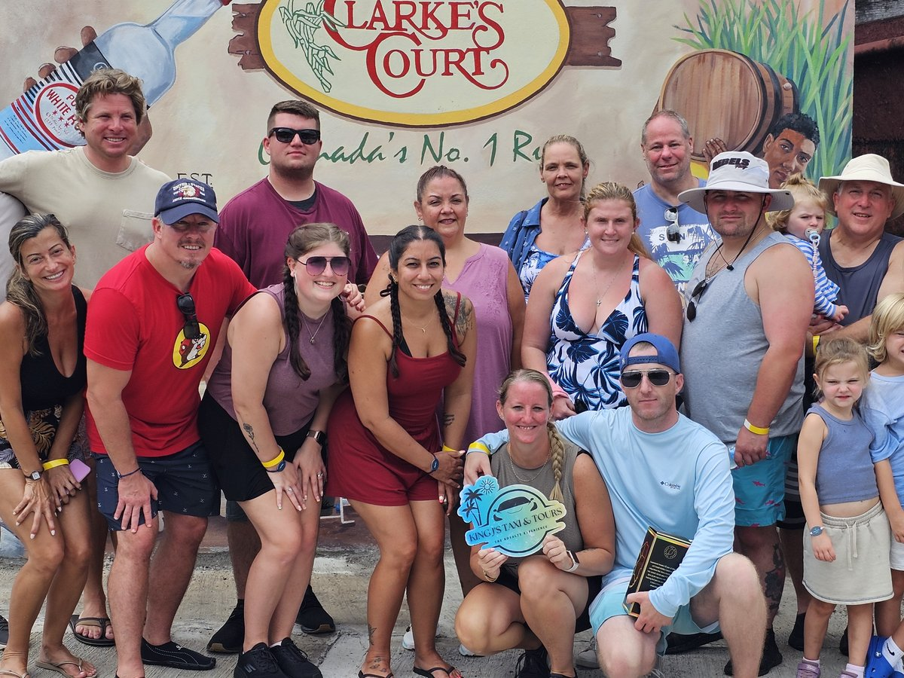

Half day · private group
Grenada Highlights Half-Day Rum, Chocolate and Waterfall Tour
Chocolate, rum and a waterfall in one half day.
The stops
- House of Chocolate — 30 minutes
- Explore Grenada’s cocoa and chocolate heritage
- Learn about local chocolate production
- Chocolate sampling is included
- Clarke’s Court Rum Distillery — 35 minutes
- Visit one of Grenada’s traditional rum distilleries
- Learn about the rum-making process
- Enjoy a rum tasting
- Annandale Waterfall & Forest Park — 30 minutes
- Explore the tropical gardens surrounding the waterfall
- Take photos
- Enjoy a refreshing swim under the waterfall
Included
- Private transportation
- Air-conditioned vehicle
- Bottled water
- Alcoholic beverages and rum tasting
- Entrance fees
- Chocolate sampling
Tour flow: Hotel or cruise port pickup → House of Chocolate → Clarke’s Court Rum Distillery → Annandale Falls → return to pickup location. The tour is operated by King J’s Taxi Services and Tours and is offered as a private experience, so only your group participates.
Price on request